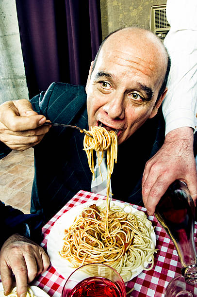

Welcome to Luigi's Pizzeria, where the heart of Naples pulses in the vibrant city of Leeds. Step into our cozy haven and let the rich aromas of authentic Neapolitan pizza transport you to the bustling streets of Italy.
Discover the Taste of Tradition Our menu is a celebration of time-honored recipes and the art of pizza making. Each dish is a masterpiece, crafted with the freshest ingredients and the passion that only a true pizzaiolo can bring.
Experience the Warmth of Italy From the moment you walk through our doors, you'll be embraced by the charm of Italian hospitality. Our friendly staff is dedicated to making your visit memorable, whether you're here for a quick lunch or a leisurely dinner.
Join Our Community Luigi's Pizzeria isn't just a restaurant; it's a gathering place for friends and family. We believe in creating connections over great food and sharing moments that turn into cherished memories.
Savor Every Slice Indulge in our signature pizzas, from the classic Margherita to the adventurous flavors of our specialty pies. Each bite is a testament to the legacy of Luigi Romano, whose vision of bringing a slice of Naples to Leeds lives on.
Come in and make yourself at home at Luigi's Pizzeria—where every pizza tells a story.
Feel the warmth, taste the tradition, and become a part of our story today.
Meet Luigi, Our Founder
From the bustling streets of Naples to the heart of Leeds, Luigi Romano has journeyed far to share his culinary passion. Luigi's love for pizza began in the small, family-run trattorias of his hometown, where the art of pizza making is a way of life. It was there, amid the flour-dusted counters and fiery ovens, that Luigi mastered the delicate balance of flavors and textures that make Neapolitan pizza so special.
Luigi's dream was to bring a piece of his Italian heritage to the UK, and in 2000, that dream became a reality with the opening of Luigi's Pizzeria. His dedication to authenticity is evident in every aspect of the restaurant, from the hand-selected ingredients to the traditional cooking methods.
But Luigi's Pizzeria is more than just a restaurant; it's a reflection of Luigi himself—warm, welcoming, and full of life. Luigi believes that pizza is not just food; it's an experience that brings people together. He takes great pride in seeing the smiles of satisfied customers and hearing the laughter of families enjoying his creations.
When he's not tossing dough or greeting guests, Luigi enjoys sharing stories of his Italian adventures and the history behind his beloved recipes. His infectious enthusiasm and genuine hospitality make every visit to Luigi's Pizzeria feel like a trip to Italy.
So, come on down, shake hands with the man behind the magic, and taste the passion that has made Luigi's Pizzeria a beloved fixture in Leeds.
Luigi and the entire team at Luigi's Pizzeria can't wait to welcome you!

Luigi Romano